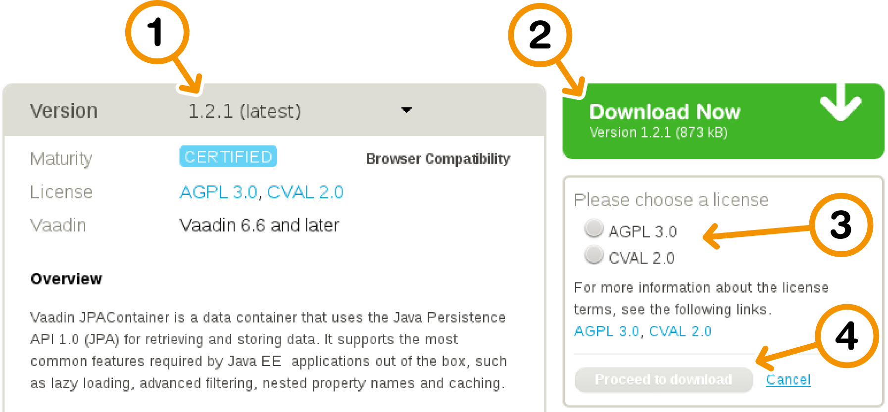
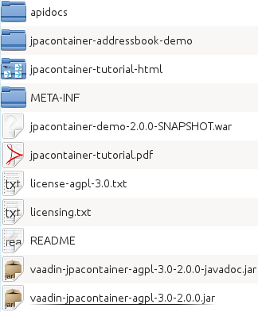
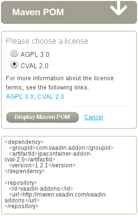
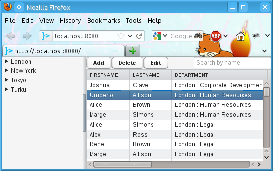
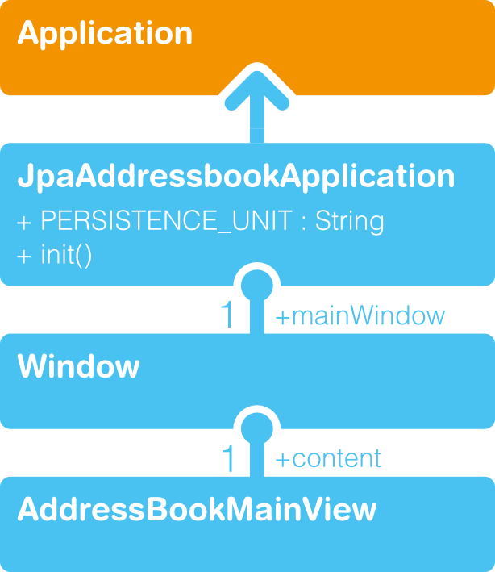
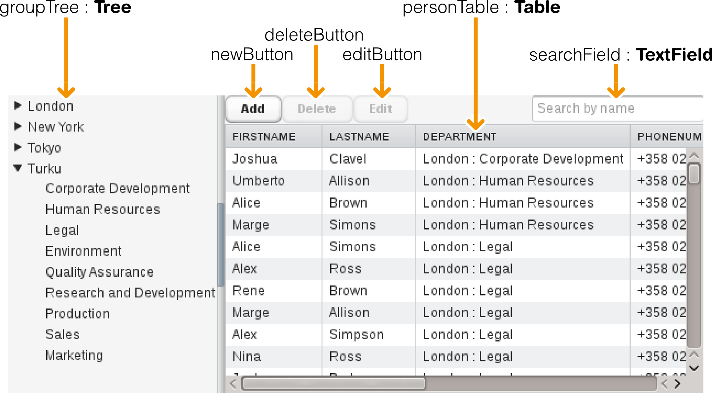
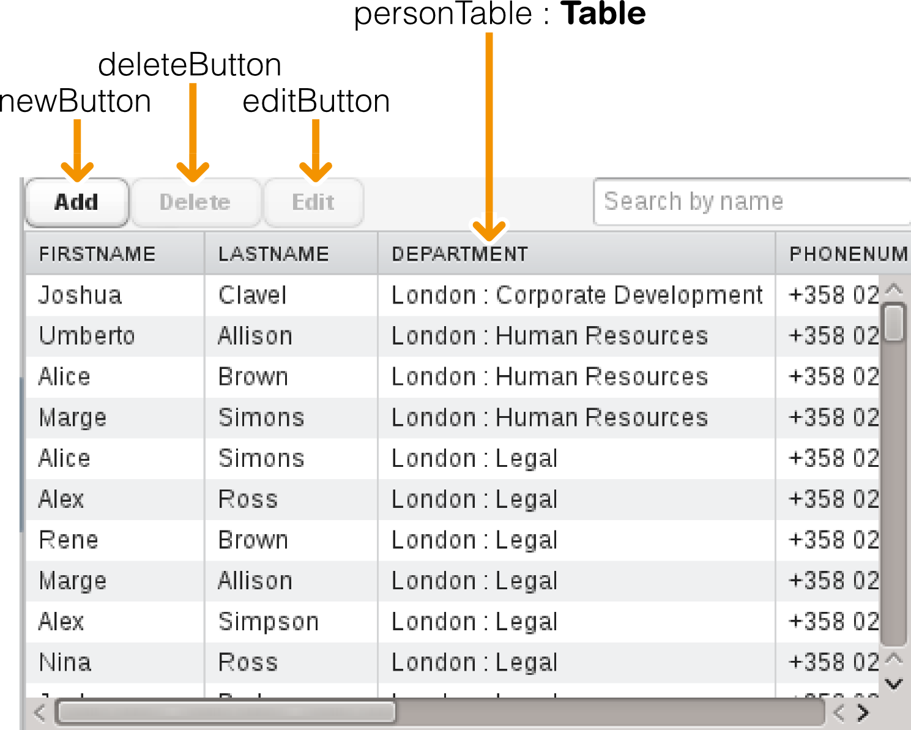
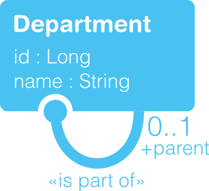
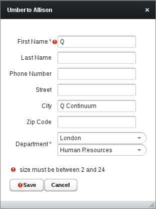

Bound to Persist
with Vaadin JPAContainer
Vaadin JPAContainer
2.0
Vaadin JPAContainer is a Vaadin Container implementation for binding Vaadin user interface components directly to Java objects persisted using the Java Persistence API
1 Introduction
1.1 Overview
Most business web applications need to either store data in or retrieve it from a database, or both. However, the data is rarely written directly from the user input to the database. Applications that follow a multilayered architecture have an intermediate business logic or domain layer, which is implemented as Java classes.
![[Image]](img/three-layer-architecture-hi.png)
Figure 1: Three-Layer Architecture
The data binding model in Vaadin can be used to bind user interface components to a domain layer. The purpose of Java Persistence API is to define how the Java classes of the domain layer are mapped to database tables. Using the mappings, the instances of such classes can be persisted – stored in and retrieved from the database – without writing complex queries and copying the values between the queries and the domain model.
Vaadin JPAContainer allows connecting Vaadin user interface components directly to the persistent model objects. It is an implementation of the container interface defined in the Vaadin core framework. You can use the container to display data in a table, tree, any other selection component, or edit the data in a form.
![[Image]](Pictures/10000201000005CB0000017F061832EE.png)
Figure 2: Role of JPAContainer in binding Vaadin components to a database
In this tutorial, we revisit the Vaadin Tutorial presented in vaadin.com/tutorial and make a similar application with persistence using JPAContainer.
But first, we start by going through the basic concepts of Vaadin data binding, Java Persistence API, JPA implementations, relational databases, and the role of JPAContainer to in the darkness bind them.
Then, we are ready to look into installing Vaadin JPAContainer or importing the JPAContainer AddressBook Demo, defining a domain model, and using the JPAContainer in an application.
1.2 Technologies Covered in the Tutorial
The basic purpose of this tutorial is to demonstrate the use of the following technologies:
-
Vaadin Framework
-
Vaadin JPAContainer
-
Java Persistence API
-
Java Bean Validation API
We use the following additional tools:
-
EclipseLink
-
Vaadin Bean Validation add-on
-
Hibernate Validator
-
H2 Database Engine
-
CustomField add-on
Any implementation of the Java Persistence API could be used, but in this tutorial we choose to use EclipseLink, which is the reference implementation of JPA 2.0. Its choice is only relevant in the project configuration.
The Vaadin Bean Validation add-on allows validation of Vaadin forms using the Java Bean Validation API 1.0 (JSR-303). It is based on annotations for the bean properties. We use the Hibernate Validator as the chosen implementation of the API.
For the back-end relational database, we use an in-memory database using the H2 database engine.
The CustomField add-on allows creating composite field components much the same way as the standard CustomComponent in Vaadin core framework.
1.3 Vaadin Data Model
Let us first recapture the Vaadin data model introduced in the Chapter 9: Binding Components to Data in Book of Vaadin. It consists of three levels of containment: properties, items, and containers.
1.3.1 Properties
Atomic data is represented as Property objects that have a value and a type. Properties can be bound to Field components, such as a TextField, or a table cell.
// A property of some type
ObjectProperty<String> p =
new ObjectProperty<String>(“the property value”);
// A field
TextField field = new TextField(“Name”);
// Bind the field to the property
field.setPropertyDataSource(p);
The ObjectProperty used above is just one implementation of the Property interface – in JPAContainer we use a different property type.
1.3.2 Items
An Item is a collection of properties that is typically bound to a Form or a row in a Table or some other selection component. Properties of an item are identified by a property identifier (PID).
// Create an item with two properties
PropertysetItem item = new PropertysetItem();
item.addItemProperty("name",
new ObjectProperty<String>("Zaphod"));
item.addItemProperty("age",
new ObjectProperty<Integer>(42));
// Bind it to a form
Form form = new Form();
form.setItemDataSource(item);
1.3.3 Containers
A Container is a collection of items, usually bound to a Table, Tree, or some other selection component. Items in a container are identified by an item identifier (IID). Normally, all the items in a container have the same type and the same properties.
For a more detailed description of the Vaadin data model, please refer to Chapter 9: Binding Components to Data.
1.3.4 Normal (Non-Persistent) Binding to JavaBeans
Vaadin core library provides BeanItem implementation of the Item interface to bind bean objects. At the Container level, Vaadin provides the BeanItemContainer and BeanContainer implementations. They are very useful for handling transient (non-persistent) objects.
// Here is a bean
public class Bean implements Serializable {
String name;
double energy; // Energy content in kJ/100g
public Bean(String name, double energy) {
this.name = name;
this.energy = energy;
}
public String getName() {
return name;
}
public void setName(String name) {
this.name = name;
}
public double getEnergy() {
return energy;
}
public void setEnergy(double energy) {
this.energy = energy;
}
}
...
// Create a container for such beans
BeanItemContainer<Bean> beans =
new BeanItemContainer<Bean>(Bean.class);
// Add some beans to it
beans.addBean(new Bean("Mung bean", 1452.0));
beans.addBean(new Bean("Chickpea", 686.0));
beans.addBean(new Bean("Lentil", 1477.0));
beans.addBean(new Bean("Common bean", 129.0));
beans.addBean(new Bean("Soybean", 1866.0));
// Bind a table to it
Table table = new Table("Beans of All Sorts", beans);
layout.addComponent(table);
Actually, the classes added to a BeanItemContainer do not need to be beans; only the setters and getters are relevant, and it is not necessary to implement Serializable and have a default constructor.
So, that should be simple. Next, we see how to persist Java classes.
1.4 Java Persistence API
Java Persistence API (JPA) is an API for object-relational mapping (ORM) of Java objects to a relational database. In JPA and entity-relationship modeling in general, a Java class is considered an entity. Class (or entity) instances correspond with a row in a database table and member variables of a class with columns. Entities can also have relationships with other entities.
Vaadin JPAContainer supports the JPA 2.0 standard.
1.4.1 Persistence Metadata
JPA requires metadata about the entities and their relationships. The metadata can be defined in an XML metadata file or with Java annotations defined in the javax.persistence package. With JPAContainer, you need to provide the metadata as annotations.
For example, if we look at the Person class in the JPAContainer AddressBook Demo, we define various database-related metadata for the member variables of a class:
@Entity
public class Person {
@Id
@GeneratedValue(strategy = GenerationType.AUTO)
private Long id;
@NotNull
@Size(min = 2, max = 24)
private String firstName;
@Size(min = 2, max = 24)
private String lastName;
@NotNull
private Department department;
…
The JPA implementation uses reflection to read the annotations and defines a database model automatically from the class definitions.
JPA annotation is discussed in detail later in Section 4.3: Annotating the Classes for Persistence.
1.4.2 JPA Implementations
Java Persistence API (JPA) is a specification that is implemented by various JPA implementations. EclipseLink is the reference implementation of JPA 2.0. It is found to be well suited for stateful applications, as is the case with Vaadin.
Hibernate is another popular implementation of the standard, where the implementation is provided in Hibernate EntityManager, Hibernate Metamodel Generator, and Hibernate Annotations.
1.5 Rapid Start with Spring Roo
Perhaps the quickest way to create a domain model and persist it with JPAContainer is to use Spring Roo, a rapid development tool for Java applications. It generates code that uses the Spring Framework, Java Persistence API, and Apache Maven. It also allows extending its functionality using add-ons, such as the Vaadin Plugin for Spring Roo. The Vaadin add-on can generate a user interface views based on the data model definitions given to Roo.
For a Spring Roo tutorial with Vaadin, please refer to Chapter 12: Rapid Development Using Vaadin and Roo in the Book of Vaadin.
2 Installing Vaadin JPAContainer
This chapter gives basic instructions for installing Vaadin JPAContainer in your own application. If you just wish to go on with the tutorial and install JPAContainer later, you can skip to Chapter 3: JPAContainer AddressBook Demo.
2.1 Installation Options
You have the following options for installing JPAContainer:
-
Download installation package from Vaadin Directory
-
Define a Maven dependency
-
Create a new Vaadin project with a special archetype
2.2 Downloading JPAContainer from Vaadin Directory
JPAContainer is available for immediate download from the Vaadin Directory at http://vaadin.com/directory#addon/vaadin-jpacontainer.

Figure 3: Downloading JPAContainer from Vaadin Directory
-
Select Version (the latest version is selected by default)
-
Click Download Now
-
Select either AGPL or CVAL license
-
Click
-
After downloading the installation package, extract its contents to a local folder using an appropriate ZIP extraction software for your operating system
Dual Licensing Under AGPL and CVAL
Vaadin JPAContainer is available under two licenses: Affero General Public License (AGPL) and Commercial Vaadin Add-on License (CVAL). If your project is compatible with the open-source AGPL, you can use the add-on for free. Otherwise you must acquire a sufficient number of CVAL licenses before the 30-day trial period ends. Vaadin JPAContainer is distributed as a separate installation package for each license.
Use of Vaadin JPAContainer with the CVAL license is included in the Vaadin PRO subscription.
2.3 Installation Package Content
Once extracted to a local folder, the contents of the installation directory are illustrated in Figure 4.

Figure 4: Installation Package Contents
The files in the installation package are as follows:
README
A readme file describing the package contents.
licensing.txt
General information about licensing.
license-xxxx-y.y.txt
The full license text for the library.
vaadin-jpacontainer-xxxx-y.y-z.z.z.jar
The actual Vaadin JPAContainer library. The xxxx is the license name and y.y its version number. The final z.z.z is the version number of the Vaadin JPAContainer.
vaadin-jpacontainer-xxxx-y.y-z.z.z-javadoc.jar
JavaDoc documentation JAR for the library. You can use it for example in Eclipse by associating the JavaDoc JAR with the JPAContainer JAR in the build path settings of your project.
apidocs
The JavaDoc API documentation in plain HTML.
jpacontainer-tutorial.pdf
This tutorial in PDF format.
jpacontainer-tutorial
The tutorial in HTML format. The latest version of the tutorial is always available at vaadin.com/download/jpacontainer-tutorial/.
jpacontainer-addressbook-demo
The JPAContainer AddressBook Demo project covered in this tutorial. You can compile and package the application as a WAR with “mvn package” or launch it in the Jetty web browser with “mvn jetty:run”. You can also import the demo project in Eclipse as described in Section 3.1.2: Importing from Existing Installation Folder.
jpacontainer-demo-z.z.z.war
The basic JPAContainer demo. It is somewhat more extensive than the AddressBook Demo.
2.4 Including Libraries in Your Project
The Vaadin JPAContainer JAR must be included in the library folder of the web application. It is located in WEB-INF/lib path in a web application. In a normal Eclipse web projects the path is WebContent/WEB-INF/lib. In Maven projects the JARs are automatically included in the folder, as long as the dependencies are defined correctly.
Required Libraries
You will need the following JARs:
-
Vaadin Framework Library
-
Vaadin JPAContainer
-
Java Persistence API 2.0 (javax.persistence package)
-
JPA implementation (EclipseLink, Hibernate, …)
-
Database driver or embedded engine (H2, HSQLDB, MySQL, …)
The Vaadin Framework library is automatically downloaded and updated by the Vaadin Plugin for Eclipse.
Optional Libraries
Optional libraries included in the AddressBook Demo are:
-
Vaadin BeanValidation add-on
-
Hibernate Validator
-
Logging library (SLF4J, …)
-
CustomField add-on
Example
Below is an example listing of the JARs included in WEB-INF/lib in the AddressBook demo. The exact version numbers may vary.
beanvalidation-addon-0.6.2.jar
customfield-0.9.3.jar
eclipselink-2.2.0.jar
h2-1.3.160.jar
hibernate-validator-4.2.0.Final.jar
javax.persistence-2.0.0.jar
jpacontainer-addon-agpl-3.0-2.0.0-SNAPSHOT.jar
slf4j-api-1.6.1.jar
vaadin-6.7.1.jar
validation-api-1.0.0.GA.jar
2.5 Defining Dependencies in Maven
You can find the dependency declaration for the JPAContainer add-on in the Vaadin Directory page, as illustrated in Figure 5.

Figure 5: JPAContainer dependency declaration for Maven.
The dependency definition needs to be put in the pom.xml file in the project. The demo project requires also various other dependencies, namely for EclipseLink, H2 database, BeanValidator, etc. Please see how they are defined in the pom.xml.
Detailed instructions for using Vaadin Add-ons in Maven projects are given in Book of Vaadin Chapter 13: Using Vaadin Add-ons, in the Section Using Add-ons in a Maven Project.
2.6 Vaadin JPAContainer Maven Archetype
If you wish to create a new JPAContainer enabled Vaadin project with Maven, you can use the vaadin-archetype-jpacontainer archetype. Please see the section Creating a Project with Maven in the Book of Vaadin for details on creating a Vaadin project with a Maven archetype.
3 JPAContainer AddressBook Demo
In this JPAContainer tutorial, we create an application similar to the one presented in vaadin.com/tutorial, but with persistence.
The demo project uses Maven, but you can set up a project just as well as a regular Eclipse project.
3.1 Importing the Tutorial Project
Before proceeding further, you should import the demo project to your favorite IDE...well, let's say that is Eclipse. As the project is Maven-based, Eclipse users need to install the m2e (or m2eclipse for older versions) plugin to be able to import Maven projects.
3.1.1 Checking Out from Repository (optional)
If you wish to use the latest version of the demo or do not have the Vaadin JPAContainer installation package at hand, you can check out the demo from the repository. If you do not wish to install Subclipse and the Subclipse SCM connector in Eclipse, which can cause some trouble sometimes, you can do the check-out from the command-line as follows:
-
Install Subversion command-line tools or use some alternative Subversion client
-
Run the following command in a terminal window or use some other Subversion client to do the checkout:
$ svn co http://dev.vaadin.com/svn/addons/JPAContain
er/trunk/jpacontainer-addressbook-demo
3.1.2 Importing from Existing Installation Folder
The demo project is included in the Vaadin JPAContainer installation package. Once extracted to a local folder or checked out from the repository as described above, you can import it in Eclipse as follows:
-
Install m2e in Eclipse if you have not done so already
-
Select File → Import in Eclipse
-
Select Maven → Existing Maven Projects, and click .
-
Click to select the jpacontainer-addressbook-demo folder where you checked out the project.
-
Click .
3.1.3 Import from Repository Using Subclipse
If you have installed Subclipse in Eclipse, you should be able to import the demo project a bit easier as follows:
-
Install m2e in Eclipse if you have not done so already
-
Select File → Import
-
Select Maven → Check out Maven Project from SCM, and click .
-
In SCM URL, select svn and enter URL http://dev.vaadin.com/svn/addons/JPAContainer/trunk/jpacontainer-addressbook-demo
-
Click .
3.2 Browsing the Application
Importing the project takes a while. After it is finished, please take some time to inspect the project structure and files in Eclipse. The Project Explorer in Eclipse organizes Java source files in source folders, as illustrated in Figure 6.
![[Image]](img/addressbook-project-contents.png)
Figure 6: Browsing the project contents with Project Explorer in Eclipse.
com.vaadin.demo.jpaaddressbook
The JPAContainer AddressBook Demo package, which contains the application class (Section 5.2: Application Class), the main view class (Section 5.3: AddressBookMainView), some UI classes and some helpers.
com.vaadin.demo.jpaaddressbook.domain
Domain classes as described in Chapter 4: Defining a Domain Model.
src/main/resources/META-INF/persistence.xml
The persistence configuration, as described in Section 3.3: Persistence Configuration.
pom.xml
Maven project configuration file (Portable Object Model). It is a somewhat regular configuration for Vaadin application, as described in the Section 2.5: Creating a Project with Maven in the Book of Vaadin. The most relevant parts are the Vaadin JPAContainer and other dependency definitions, as mentioned in Section 2.5: Defining Dependencies in Maven.
3.3 Persistence Configuration
Persistence configuration is done in a persistence.xml file. In the demo project, it is located in src/main/resources/META-INF folder. The configuration includes defining the following:
-
The persistence unit
-
The persistence provider
-
The database driver and connection
-
Logging
The persistence.xml file is packaged as WEB-INF/classes/META-INF/persistence.xml in the WAR. This is done automatically in a Maven build at the package phase.
3.3.1 Persistence XML Schema
The beginning of the persistence.xml file defines the used schema and namespaces:
<?xml version="1.0" encoding="UTF-8"?>
<persistence
xmlns="http://java.sun.com/xml/ns/persistence"
xmlns:xsi="http://www.w3.org/2001/XMLSchema-instance"
xsi:schemaLocation="
http://java.sun.com/xml/ns/persistence
http://java.sun.com/xml/ns/persistence/persistence_2_0.xsd"
version="2.0">
3.3.2 Defining the Persistence Unit
The root element of the persistence definition is persistence-unit. Its name attribute is used in the application when referring to the persistence unit. In Section 5.2: Application Class we define a global PERSISTENCE_UNIT identifier for referring to the unit.
<persistence-unit name="addressbook">
Persistence Provider
The provider is the JPA provider implementation used. We use the EclipseLink JPA, so we define its provider class here.
<provider>
org.eclipse.persistence.jpa.PersistenceProvider
</provider>
Listing the Persistent Classes
In this example, we allow including unlisted classes for persistence. The alternative is to specify each persistent class with a <class> element.
<exclude-unlisted-classes>
false
</exclude-unlisted-classes>
JPA provider specific parameters are specified under the properties element. As we use EclipseLink JPA, the parameters are specific to that. If you use another provider, please refer to its documentation for the parameters.
<properties>
…
3.3.3 Database Connection
EclipseLink allows using JDBC for database connection. We use the H2 database, so we need to define its driver here.
<property name="eclipselink.jdbc.platform"
value="org.eclipse.persistence.platform.database.H2Platform" />
<property name="eclipselink.jdbc.driver"
value="org.h2.Driver" />
We use an in-memory database for the demo with the following connection URL definition:
<property name="eclipselink.jdbc.url"
value="jdbc:h2:˜/jpacontaineraddressbookh2db" />
We can just use the default user name and password for the H2 database.
<property name="eclipselink.jdbc.user"
value="sa" />
<property name="eclipselink.jdbc.password"
value="sa" />
3.3.4 Logging Configuation
We set the logging level for EclipseLink JPA:
<property name="eclipselink.logging.level"
value="FINE" />
3.3.5 Other Settings
The rest is some Data Definition Language settings for EclipseLink. During development, when we use generated example data, we want EclipseLink to drop tables before trying to create them. In production environments, you should use “create-tables”.
<property name="eclipselink.ddl-generation"
value="drop-and-create-tables" />
And there's no need to generate SQL files, just execute them directly to the database.
<property name="eclipselink.ddl-generation.output-mode"
value="database" />
</properties>
</persistence-unit>
</persistence>
3.4 Running the Application
If you imported the project as a Maven project, you can launch it in a server as follows:
-
Stop any web server you may have running in port 8080.
-
Right-click the project folder in Project Explorer and select Run As → Maven Build....
-
In the Edit Configuration window that opens, enter “package jetty:run” in the Goals field and click . Wait for a while as the light-weight Jetty web server is launched.
-
Open a web browser with URL http://localhost:8080/.
The AddressBook Demo application should work as shown in Figure 7.

Figure 7: JPAContainer AddressBook Demo.
3.5 Browsing the Sources Online
You can also browse the source code of the demo project on-line at http://dev.vaadin.com/browser/svn/addons/JPAContainer/trunk/jpacontainer-addressbook-demo.
4 Defining a Domain Model
In this chapter, we look into defining a domain model, implementing it as Java classes, and then enabling persistence by annotating the classes with JPA annotations.
4.1 A Domain Model
The AddressBook has a simple domain model with two entities: a Person and a Department.
![[Image]](img/domain-model-hi.png)
Figure 8: Domain Model
A Department has an integer (Long) identifier and a name. Departments have a hierarchy, which is represented by a parent reference. Each department has n persons working in it.
A Person has also an integer (Long) identifier and a first and last names, as well as basic contact information. A person works in a department.
4.2 Defining the Classes
The classes are defined in the com.vaadin.demo.jpaaddressbook.domain package of the demo project.
Department Class
The Department class is defined from the domain model in as follows:
public class Department {
private Long id;
private String name;
private Set<Person> persons;
private Boolean superDepartment;
private Department parent;
… setters and getters …
}
Notice that we added a superDepartment member that was not in the domain model. It is a shorthand variable that is only used internally for optimization to mark departments that only have sub-department and no personnel.
public boolean isSuperDepartment() {
if (superDepartment == null) {
superDepartment = getPersons().size() == 0;
}
return superDepartment;
}
In addition, we define a hierarchicalName property that only has a getter and is not associated with a member variable. Its value is the hierarchy path calculated dynamically using the toString() method.
public String getHierarchicalName() {
if (parent != null) {
return parent.toString() + " : " + name;
}
return name;
}
public String toString() {
return getHierarchicalName();
}
Person Class
The Person class is defined from the domain model in as follows:
public class Person {
private Long id;
private String firstName;
private String lastName;
private String street;
private String city;
private String zipCode;
private String phoneNumber;
private Department department;
… setters and getters …
}
4.3 Annotating the Classes for Persistence
Let us look at the basic JPA metadata annotations as they are used in the Department class of the tutorial project. The annotations are defined in the javax.persistence package. Please refer to JPA reference documentation for the complete list of possible annotations.
4.3.1 @Entity
Each class that is enabled as a persistent entity must have the @Entity annotation.
@Entity
public class Department {
4.3.2 @Id
Entities must have an identifier that is used as the primary key for the table. It is used for various purposes in database queries, most commonly for joining tables.
@Id
@GeneratedValue(strategy = GenerationType.AUTO)
private Long id;
The identifier is generated automatically in the database. The strategy for generating the identifier is defined with the @GeneratedValue annotation.
4.3.3 @OneToMany
As noted earlier, entities can have relationships. The Department entity of the domain model has one-to-many relationship with the Person entity (“Department has persons”). This relationship is represented with the @OneToMany annotation.
@OneToMany(mappedBy = "department")
private Set<Person> persons;
4.3.4 @ManyToOne
Many departments can belong to the same higher-level department, represented with @ManyToOne annotation.
@ManyToOne
private Department parent;
4.3.5 @Transient
Properties that are not persisted are marked as transient with the @Transient annotation.
@Transient
private Boolean superDepartment;
…
@Transient
public String getHierarchicalName() {
…
5 Application Architecture
This chapter describes the top-level user interface architecture of the JPAContainer AddressBook application.
5.1 Overview
The AddressBook application in the regular Vaadin Tutorial provides a reference architecture for Vaadin projects. The JPAContainer AddressBook takes this architecture further by including the persistence layer. It demonstrates the following tasks:
-
Building a user interface view
-
Binding the UI to the persistent domain model with JPAContainer
-
Management of JPAContainer instances with a container factory
-
Persistence using EntityManager
-
Use of the ThreadLocal pattern to access global data
-
Filtering a JPAContainer
5.2 Application Class
The JpaAddressbookApplication is the main class of the application.

Figure 9: AddressBook Application Class
The application class has the following tasks:
-
Hold a global identifier for the persistence unit
-
Generate example data in the database
-
Create the main view
The application class is defined in the com.vaadin.demo.jpaaddressbook package as follows:
public class JpaAddressbookApplication
extends Application {
We hold a globally accessible identifier string for the persistence unit in the application class. It is used for instantiating a JPAContainer or an entity manager.
public static final String PERSISTENCE_UNIT =
"addressbook";
The demo data is static global data generated already during the initialization of the application class as follows:
static {
DemoDataGenerator.create();
}
…
The init() method of the application is trivial as the application only has one view which is managed in the AddressBookMainView class:
@Override
public void init() {
Window window = new Window();
setMainWindow(window);
window.setContent(new AddressBookMainView());
}
5.3 AddressBookMainView
The main view of the application is realized in the AddressBookMainView class, which also handles most of the user interface logic. It extends from HorizontalSplitPanel to allow the user to resize the content.
5.3.1 Overview of the User Interface
The main view is shown in Figure 10.
On the left side of the split panel, we have a Tree component, which lets the user to browse and select a department that is used to filter the table on the right.
On the right side, we have a Table component, which shows all the persons in the selected department, and if no department is selected, all persons. It also contains buttons for adding, deleting, and editing items, as described in detail in Chapter 6: Creating, Reading, Updating, and Deleting.

Figure 10: AddreddBookMainView
The underlying class relationships for the user interface are shown in Figure 11.
![[Image]](img/addressbookmainview-class-hi.png)
Figure 11: AddressBookMainView class diagram
Both the Tree and the Table are bound to a JPAContainer holding Department and Person objects, respectively.
5.4 Creating and Using a JPAContainer
The constructor of AddressBookMainView creates the JPAContainers for the Department and Person objects shown in the tree and the table. References to the containers are kept for shorthand in member variables.
public class AddressBookMainView
extends HorizontalSplitPanel
implements ComponentContainer {
…
private JPAContainer<Department> departments;
private JPAContainer<Person> persons;
…
public AddressBookMainView() {
departments = new HierarchicalDepartmentContainer();
The HierarchicalDepartmentContainer and how it is bound to an entity manager as described is Section 5.4.2: Setting the Entity Provider below.
5.4.1 Using the JPAContainerFactory to Create a JPAContainer
JPAContainerFactory contains static methods for building JPAContainers from either a persistence context name (persistence unit) or from a EntityManager instance.
The static make() method used in the demo creates a new JPAContainer backed by a CachingMutableLocalEntityProvider, using the name of the persistence unit. This particular method can be used if you do not know and do not need or want to know the instance of an EntityManager that is used, which is the case in simple instances. An instance of EntityManagerFactory will be created for the persistence unit and used to build entity managers.
persons = JPAContainerFactory.make(Person.class,
JpaAddressbookApplication.PERSISTENCE_UNIT);
…
5.4.2 Setting the Entity Provider
If you create a JPAContainer object without the factory, as we did for the departments container earlier, you must set an entity provider for it before you can use it. For the HierarchicalDepartmentContainer, we set it in the constructor. We use the efficient CachingLocalEntityProvider as there is no need to make modifications through this container.
public class HierarchicalDepartmentContainer
extends JPAContainer<Department> {
public HierarchicalDepartmentContainer() {
super(Department.class);
// Create and set the entity provider
setEntityProvider(
new CachingLocalEntityProvider<Department>(
Department.class,
JPAContainerFactory
.createEntityManagerForPersistenceUnit(
JpaAddressbookApplication
.PERSISTENCE_UNIT)));
…
}
…
The underlying JPA entity manager is created with the JPAContainerFactory using the createEntityManagerForPersistenceUnit() method. The factory caches the entity managers for each persistence unit. In the demo application, it is always the one identified with the PERSISTENCE_UNIT in the application class.
5.4.3 Binding a JPAContainer
Binding the Person table to the JPAContainer is done simply in the constructor of the Table just as with any Vaadin container:
private void buildMainArea() {
…
personTable = new Table(null, persons);
…
6 Creating, Reading, Updating, and Deleting
This chapter focuses on how the AddressBookMainView implements CRUD – creation, reading, updating, and deletion of data objects in the domain model. The basics of these tasks were covered in the Vaadin Tutorial (notice that the code is not exactly the same), so we concentrate on the parts relevant to using JPAContainer.
6.1 Building the CRUD Area
The right side of the main view contains a CRUD area where you can add items in the Person table by clicking the button, delete them with the button, and edit the selected person with the button.

Figure 12: The CRUD area
The user interface controls for the CRUD as well as the JPAContainer references are defined as member variables:
public class AddressBookMainView
extends HorizontalSplitPanel
implements ComponentContainer {
private Tree groupTree;
private Table personTable;
private TextField searchField;
private Button newButton;
private Button deleteButton;
private Button editButton;
private JPAContainer<Department> departments;
private JPAContainer<Person> persons;
private Department departmentFilter;
private String textFilter;
The departments and persons members are merely shorthand references to the containers managed by the ContainerFactory, as explained next.
6.2 Creating an Item
New Person items are created by clicking the button. The button is created in the buildMainArea() method as follows:
newButton = new Button("Add");
newButton.addListener(new Button.ClickListener() {
When the button is clicked, a new Person object is created and wrapped in a BeanItem to allow binding it to a Form.
@Override
public void buttonClick(ClickEvent event) {
final BeanItem<Person> newPersonItem =
new BeanItem<Person>(new Person());
Editing is done in a PersonEditor window documented in Section 6.3: Editing an Item in a PersonEditor. The editor class defines an EditorSavedListener interface for handling EditorSavedEvents fired when the user clicks “” in the editor.
PersonEditor personEditor =
new PersonEditor(newPersonItem);
personEditor.addListener(new EditorSavedListener() {
The PersonEditor is described in more detail in Section 6.3: Editing an Item in a PersonEditor.
Adding an Entity to the JPAContainer
When saved, the edited new item is taken out of the BeanItem wrapper and added to the JPAContainer<Person> with the addEntity() method.
@Override
public void editorSaved(EditorSavedEvent event) {
persons.addEntity(newPersonItem.getBean());
}
});
…
Once written in the container, the Table bound to the container is automatically updated to display the new item (notice that it is added to the end).
6.3 Editing an Item in a PersonEditor
The button is disabled by default and enabled when an item is selected in the table. When clicked, the PersonEditor is opened for editing the currently selected item:
editButton = new Button("Edit");
editButton.addListener(new Button.ClickListener() {
@Override
public void buttonClick(ClickEvent event) {
getApplication().getMainWindow()
.addWindow(new PersonEditor(
personTable.getItem(personTable.getValue())));
}
});
The getValue() returns the item identifier of the currently selected item (not the item itself) and getItem() returns the actual item using the ID. Notice that the JPA entity ID of the Person entity is used also as the item identifier.
PersonEditor
The PersonEditor is a sub-window that contains a Form for editing a Person item.
![[Image]](img/personeditor.png)
Figure 13: The PersonEditor
The PersonEditor is a sub-window that extends the Window. It also handles button clicks and creates the field components for the form.
public class PersonEditor extends Window
implements Button.ClickListener, FormFieldFactory {
private final Item personItem;
private Form editorForm;
private Button saveButton;
private Button cancelButton;
The item to edit is given to the constructor as a parameter. When editing an existing item with the button, the item is an EntityItem<Person>. When editing a new item added with the button, the item is a temporary BeanItem<Person> wrapper, as the person is not yet added to the JPAContainer.
public PersonEditor(Item personItem) {
this.personItem = personItem;
We use a BeanValidationForm from the Vaadin BeanValidation add-on to edit the item. We enable buffering by calling setWriteThrough(false), because otherwise the edited values would be written directly to the JPAContainer. With buffering, they are written only after commit() is called.
editorForm =
new BeanValidationForm<Person>(Person.class);
editorForm.setFormFieldFactory(this);
editorForm.setWriteThrough(false);
editorForm.setImmediate(true);
And finally, we bind the person item to the form:
editorForm.setItemDataSource(personItem,
Arrays.asList("firstName", "lastName",
"phoneNumber", "street", "city", "zipCode",
"department"));
…
Saving the Form
When the button is clicked, the buffered form is written to the underlying data model by calling commit(). In case of editing an existing item, the data is written directly to the JPAContainer<Person> and to the database. If editing a new item added with the button, the data is written to the BeanItem<Person>.
@Override
public void buttonClick(ClickEvent event) {
if (event.getButton() == saveButton) {
editorForm.commit();
Then an EditorSavedEvent is fired, to be received in an EditorSavedListener, as described in Section 6.2: Creating an Item. This allows the Add button mechanism to move the new Person object from the BeanItem<Person> to the JPAContainer<Person>.
fireEvent(new EditorSavedEvent(this, personItem));
} else if (event.getButton() == cancelButton) {
Otherwise, just discard the form. Then, close the sub-window.
editorForm.discard();
}
close();
}
6.4 Deleting an Item
Deleting an item is done simply with the removeItem() method.
deleteButton = new Button("Delete");
deleteButton.addListener(new Button.ClickListener() {
@Override
public void buttonClick(ClickEvent event) {
persons.removeItem(personTable.getValue());
}
});
deleteButton.setEnabled(false);
The getValue() returns the item identifier of the currently selected item (not the item itself) and removeItem() removes the item with the ID. Notice that the JPA entity ID of the Person entity is used also as the item identifier.
7 Presenting Hierarchical Data
This chapter describes how to bind JPAContainer to a hierarchical component, such as a Tree or TreeTable.
7.1 JPAContainer is Hierarchical
JPAContainer implements the HierarchicalEntityContainer interface, which extends the Container.Hierarchical interface that defines hierarchical representation of data in a Container. You can bind any such container to a Tree or a TreeTable.
Figure 14: Tree Bound to a Hierarchical JPAContainer<Department>
The HierarchicalEntityContainer requires that the hierarchy is represented by parent references in the entities. Recall from the Chapter 4: Defining a Domain Model that the Department entity contains an «is part of» relationship with itself, represented with a parent property. The relationship is shown in Figure 15.

Figure 15: Hierarchy Representation in the Domain Model
7.2 Defining Hierarchy Relationship
The hierarchy relationships for the JPAContainer<Department> are defined by extending it as HierarchicalDepartmentContainer that makes the necessary settings.
7.2.1 Setting the Parent Reference Property
The property representing the hierarchy by parenthood is defined with the setParentProperty() method. In our domain model, the property name is coincidentally “parent”.
public class HierarchicalDepartmentContainer
extends JPAContainer<Department> {
public HierarchicalDepartmentContainer() {
super(Department.class);
…
setParentProperty("parent");
}
…
7.2.2 Redefining the areChildrenAllowed() Behaviour
The class overrides the areChildrenAllowed() method to customize the logic for when children are allowed, that is, when the expansion marker is shown. We want to have only the non-leaf items expandable in the tree. Children are therefore allowed only for the root items, that is, the “super departments” having the superDepartment property as true.
@Override
public boolean areChildrenAllowed(Object itemId) {
return super.areChildrenAllowed(itemId) &&
getItem(itemId).getEntity()
.isSuperDepartment();
}
The areChildrenAllowed() in the JPAContainer superclass should be called to make basic checks.
7.3 Creating Hierarchical Entities
The Department entities are created in the DemoDataGenerator by writing directly to the JPA EntityManager, so that we do not use JPAContainer for this at all. We simply use the setParent() for the children to set the hierarchy relationship.
em.getTransaction().begin();
Random r = new Random(0);
for (String o : officeNames) {
Department geoGroup = new Department();
geoGroup.setName(o);
for (String g : groupsNames) {
Department group = new Department();
group.setName(g);
… add persons to the group …
group.setParent(geoGroup);
group.setPersons(gPersons);
em.persist(group);
}
em.persist(geoGroup);
}
em.getTransaction().commit();
8 Filtering Data
This step describes how to create filters for a JPAContainer.
8.1 Overview
The JPAContainer AddressBook demo provides two different ways to filter the persons in the JPAContainer<Person> container, attached to the Table. First, the user can select a department from the tree on the left, in which case the persons are filtered by the department (or the super-department) they belong to. Second, the use can do text search to filter persons by their name property.
Filtering a JPAContainer does not differ significantly from regular container filtering described in the section Filterable Containers in the Book of Vaadin.
8.2 Filtering by Entity
Filtering persons by a department is done with a Department object stored as a member variable in the AddressBookMainView:
private Department departmentFilter;
8.2.1 Setting the Filter
Selecting an item in the department tree fires a value change event, which we handle to set the department filter.
groupTree = new Tree(null, departments);
groupTree.setItemCaptionPropertyId("name");
groupTree.setImmediate(true);
groupTree.setSelectable(true);
groupTree.addListener(new Property.ValueChangeListener() {
@Override
public void valueChange(ValueChangeEvent event) {
Object id = event.getProperty().getValue();
if (id != null) {
Now, we can get the selected item from the container with getItem(), which returns an EntityItem<Department> wrapper. We can get a Department object reference with getEntity().
Department entity =
departments.getItem(id).getEntity();
Then, we just set the filter and apply the filters in updateFilters().
departmentFilter = entity;
} else if (departmentFilter != null) {
departmentFilter = null;
}
updateFilters();
}
});
8.2.2 Adding and Applying the Filter
The updateFilters() applies the department filter (as well as the other filter). We first clear up any existing filters and disable the JPAContainer<Person> automatic applying of filters immediately when they are added. As applying a filter takes a bit time and we have two filters, we want to apply them both at once.
private void updateFilters() {
persons.setApplyFiltersImmediately(false);
persons.removeAllContainerFilters();
As we have a two-level department hierarchy, we need to handle the cases for a department and super-department separately.
if (departmentFilter != null) {
// two level hierarchy at max in our demo
if (departmentFilter.getParent() == null) {
persons.addContainerFilter(
new Equal("department.parent",
departmentFilter));
} else {
persons.addContainerFilter(
new Equal("department",
departmentFilter));
}
}
…
The Equal constructor creates a filter that compares a container property in the JPAContainer<Person> to a value. The value of the department property of a Person bean is a Department object, so we can compare it to the stored filter object.
The Equal filter allows referencing nested bean properties with dot notation, so we were able to refer to the parent property in the Department bean.
It is important to notice that even though the JPAContainer<Department> and JPAContainer<Person> were created separately using the entity manager, the Department entities referenced in the Person container are the same objects as in the Department container.
Applying the Filters
The filters are applied at the end of the updateFilters() method as follows:
persons.applyFilters();
Notice that this applies also the text filter described next.
8.3 Filtering by a String Property Value
Filtering persons by a text filter is done with string stored as a member variable in the AddressBookMainView:
private String textFilter;
The search field is a TextField and the input is handled interactively with a text change listener. It simply stores the current input value in the filter string as follows:
searchField = new TextField();
searchField.setInputPrompt("Search by name");
searchField.addListener(new TextChangeListener() {
@Override
public void textChange(TextChangeEvent event) {
textFilter = event.getText();
updateFilters();
}
});
We use the filter string in a composite filter that checks whether the filter string matches the beginning of either firstName or lastName of a Person entity.
if (textFilter != null && !textFilter.equals("")) {
Or or = new Or(new Like("firstName",
textFilter + "%", false),
new Like("lastName",
textFilter + "%", false));
persons.addContainerFilter(or);
}
The filter is applied along with the department filter as described earlier.
9 Vaadin Bean Validation
This chapter describes the bean validation in the JPAContainer AddressBook Demo.
9.1 Overview
The AddressBook Demo uses the Vaadin Bean Validation add-on for validating the beans after editing, before they are committed to the database.
The Vaadin Bean Validation add-on consists of a Vaadin validator and a form that automatically applies that validator. It uses the Java Bean Validation API 1.0 (JSR-303) for validating beans based on annotations on their fields.
To use the add-on, the project needs an implementation of the Bean Validation API. In our example project, we use the Hibernate Validator.
9.2 Annotations
The validations constraints are defined in the entity classes as annotations. For example, in the Person class, we use the @NotNull and @Size constraints for some of the bean properties.
@Entity
public class Person {
…
@NotNull
@Size(min = 2, max = 24)
private String firstName;
@Size(min = 2, max = 24)
private String lastName;
…
@NotNull
@ManyToOne
private Department department;
…
For a complete list of allowed constraints for different data types, please see the Bean Validation API documentation.
9.3 Using the Validator
The Bean Validation is used by using the BeanValidationForm<> instead of the regular form. The constructor of the generic type requires the bean type as a parameter.
public PersonEditor(Item personItem) {
this.personItem = personItem;
editorForm =
new BeanValidationForm<Person>(Person.class);
…
After that, using bean validation is totally transparent as the BeanValidationForm attaches special bean validators to field as they are attached to the form.
9.3.1 Doing Validation
The validators are checked along with possible other validators when commit() or validate() is called for the form. In the PersonEditor we run commit() simply as follows:
public void buttonClick(ClickEvent event) {
if (event.getButton() == saveButton) {
editorForm.commit();
fireEvent(new EditorSavedEvent(this, personItem));
} else if (event.getButton() == cancelButton) {
editorForm.discard();
}
close();
}
Bean validation is shown in action in Figure 16. Failing validation results in an error message.

Figure 16: Bean Validation
9.3.2 Locale Setting for Bean Validation
The messages are defined in the bean validation implementation, in a ValidationMessages.properties file. The message is shown in the language specified with the locale setting for the form. The default language is English, but Hibernate Validator contains translations of the messages for a number of languages. If other languages are needed, you need to provide a translation of the properties file.